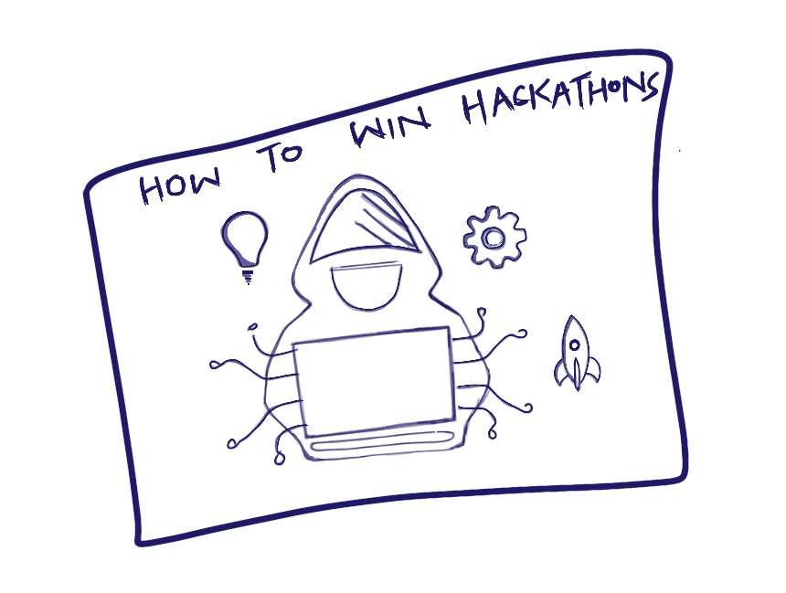

How to Win Hackathons

You can hack the hackathon.
I never trusted the truism that says participation matters more than winning. But it holds true at hackathons — simply taking part is a great use of your time. You learn to quickly develop projects. You see end-to-end implementation of software (however scrappy). And you experience hacking surprisingly useful things in a few hours. There are recruiters, workshops, food and you might make friends.
Having said that, it’s a lot of fun to win hackathons. You might win $, prizes, invites to exclusive events, internships and job interviews. Winning involves some luck, but over a course of over a dozen hackathons, I discovered ways to improve my chances. This helped my team place in the top three teams consistently.
Go to hackathons for the learning, but win hackathons for the goodies. The strategy I've outlined will give you a head start.
How to win a hackathon
Expect to win
Be optimistic. As a team, expect to win the hackathon. Intentionality helps your chances. Your team will need the drive to keep focus. Yes, you'll be more disappointed if you think you'll win and don't, but take the chances.
Do better at every phase
There are different phases in a hackathon. Do at least 10% better at each phase than the other teams.
1. Team Formation
2. Ideation
3. Prototype
4. Iteration
5. Presentation
Decide what you're competing for
For prizes, there are subjective categories (top 3 places) and there are categories that are less subjective, like "best Internet of Things" hack or a hack that uses a specific API. Identify categories that you have a good shot at winning. You have a few options at this stage:
1. Double down on one API/software. Go all in with the implementation and use of the API. This works when you know that the API can used for a few great but difficult ideas, and consequently fewer teams would be using it.
2. Spread your risk across 2-3 APIs that have prize categories.
3. Use as many APIs as possible. Many winning teams do this, and have a complicated tech stack diagram to show the judges. This brute-force method tells the judges: “hey look at us, we’ve integrated all this stuff in a short period of time. How impressive is that?!”. This works surprisingly well.
4. Don't worry about prize categories. Aim for the overall prizes. This is usually not the winning solution, but if there's a project you've been meaning to build for a long time, this is your chance.
Remember to account for other teams who are following the same line of thought.
Read the Judging Criteria
Depending on the hackathon, judges have strict judging criteria involving functionality, feasibility, design, technical depth and presentation. Please read the judging criteria before deciding on an idea. It’s usually made prominent, but if you can’t find it, ask the hosts.
You want to think through ways you can optimize your scores. For example, there’re 10 points for security features. If you don't think about security, but get a full score of on all other categories, you'll get say 90 points. Another team studies the judging criteria, may lose a few points in each category and would still manage to get ahead of you. Stick to the judging criteria - it's not the most appealing thing, but you'll need to learn to love it if you want to win.
Choose an impactful idea
Some people build a music app, or a quote generator or a game. While these might be useful, they're not exactly impactful. When competing with other projects solving big societal issues, these projects tend to not be considered for the top spots.
Impact = change to a person’s life x number of people affected
Choose impactful ideas related to environment, healthcare, education and the like.
Build Your Squad
Team is everything. Do not go at it alone. Pick partners who know their stuff or are at least willing to learn it under a tight deadline. Ideally look for people who are excited by the idea and complement the team.
Resist the temptation to take in many people into the team. If the scope of your project is big, you want to keep the team as tight as possible: 3-4 members is a good size. The more people you have, the more communication issues will arise.
Make sure you know the teams availability through the hackathon. You want to stick together until the MVP (see next point) is complete. Be prepared for the eventuality that your new teammate (or yourself) takes time off to meet with an childhood friend, wanders off fix a laptop or decides to take a tour of a new city during the hackathon. Ideally, you want to find a team before the date of hackathon. Having a team you’ve worked with before is the best option here.
Plan a Minimum Viable Product
This is the most basic ship-able version of your idea. Keep it front and center during development. Aim to complete the MVP three quarters of your way through the hackathon. This gives you some buffer to adjust.
Build a scrappy prototype. Don’t worry too much about design at this stage. Make good use of the APIs you choose.
Team Check-Ins
Have a team check-in every two hours. Evaluate your progress relative to your MVP. Make feature decisions and rehash your idea for clarity.
Team check-ins are a great time to grab some food. If you're in a new city, explore the food options around you - it's sometimes the best way to experience a city quickly. When I was in HackArizona at Tucson earlier in the year, I had the most delightful Mexican food around.
If you’re not done building an MVP, don’t worry about the presentation deck - you can directly explain your product during presentations. Reduce the scope and get to a working prototype. A working prototype is your first and biggest bottleneck. If you’re done building a minimum viable product, celebrate. Now you can focus on (1) design and presentation (2) Adding new features that came up while brainstorming, like integrating another API (3) events/workshops (4) sleep.
Presentation
Ideally have everyone in the team present parts of the project. This shows teamwork, and importantly, it eliminates the risk of one sleepy person stumbling through the entire presentation (seriously).
Judges like it when you think of your idea as a startup (however unlikely it is that you’ll continue working on it). Build scalability into the product. Present the idea as you would if you were giving a startup pitch: talk about problem, solution, market, impact, technical specs. Don't include a business plan unless it's required at the hackathon.
Push Through the Discomfort
Sometimes, when you feel frustrated that things aren’t going as smoothly as you hoped, take a deep breath, look around at others faces, and smile. You’re at a hackathon, and it's worth being here. When it’s over, you’ll get to sleep. Then take a swig from the RedBull and get back to work.
Edit: Best place to find hackathons near you — https://devpost.com/